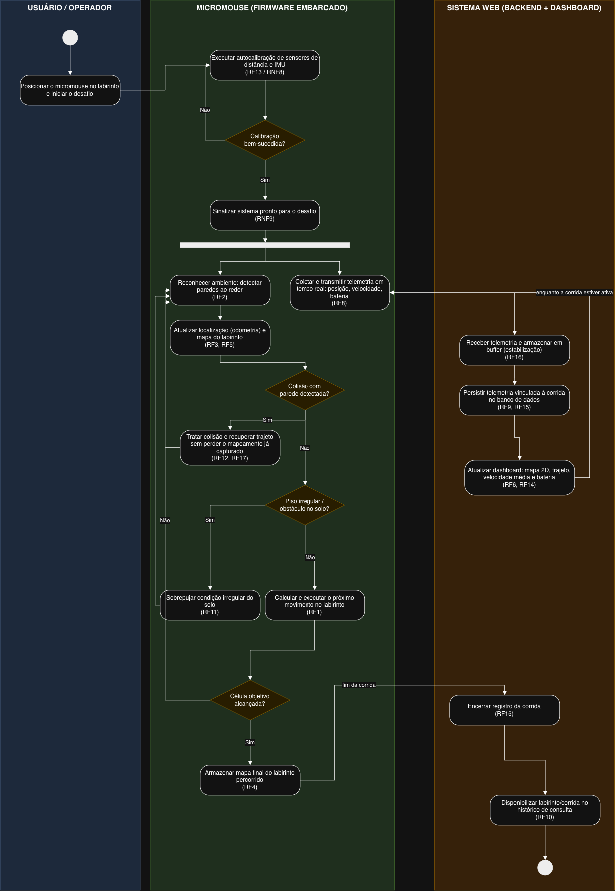
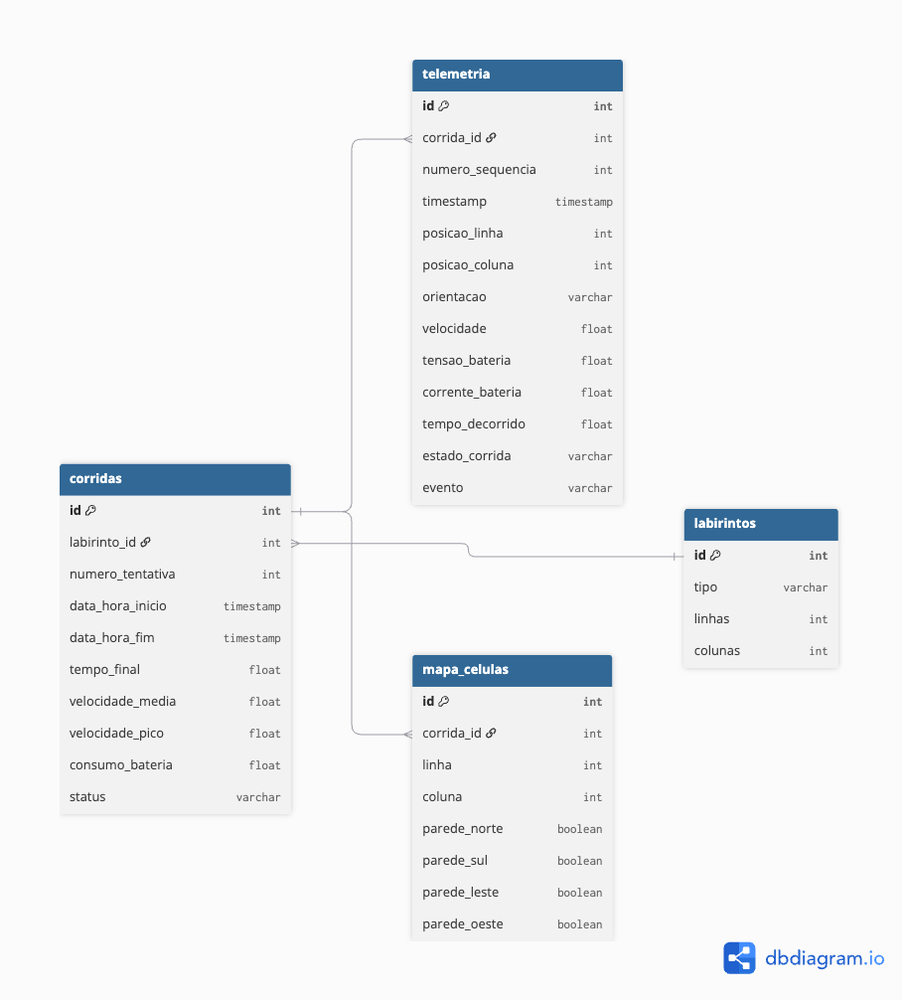

Projeto Conceitual de Software¶
Itens fundamentais: - Diagrama Atividades UML: descrever e explicar o fluxo do comportamento funcional do produto proposto, evidenciando, de forma clara e estruturada, como as atividades são executadas, em que ordem e sob quais condições. Esse diagrama permite compreender o funcionamento dinâmico do sistema, destacando: - os principais atores (usuários ou sistemas externos) envolvidos no processo; - as atividades de negócio realizadas por cada ator ou pelo próprio sistema; - os insumos (entradas) necessários para a execução das atividades; - os resultados (saídas) gerados ao longo do fluxo; - os pontos de decisão, paralelismo e sincronização das atividades; - Entre as notações mais relevantes, destacam-se o estado inicial e final, atividades, nós de decisão e junção, barras de bifurcação, Raias (swimlanes) e Fluxos de controle. - Backlog do Produto - Detalhar os requisitos funcionais (RF) com a técnica de documentação e especificação de história de usuário (HU); - Protótipos de interface gráfica do software em alta fidelidade. - Todas HUs devem conter sua descrição (Eu-Como-Para), critérios de aceitação e protótipos de interface, documentadas no github. - Exporte as informações do Backlog do Produto no GitHub Projects em formato CSV, e renderize em Markdown no formato a seguir:
Diagrama de Atividades UML¶

O diagrama acima descreve o comportamento funcional do software do micromouse, desde o início do desafio até o encerramento do registro da corrida. O fluxo está organizado em três raias (swimlanes), cada uma representando um ator do sistema:
- Usuário/Operador: pessoa responsável por posicionar o robô no labirinto e iniciar o desafio.
- Micromouse (Firmware): sistema embarcado que executa a navegação autônoma, o reconhecimento do ambiente e a coleta de telemetria.
- Sistema Web (Backend + Dashboard): sistema externo responsável por receber, persistir e exibir os dados de telemetria em tempo real.
Fluxo principal¶
O processo é iniciado pelo Usuário, que posiciona o micromouse na célula inicial do labirinto e sinaliza o início do desafio (insumo: posicionamento físico do robô).
O Micromouse então executa uma rotina de autocalibração dos sensores de distância e do sensor inercial (IMU) (RF13, RNF8). Esse é o primeiro ponto de decisão do fluxo: caso a calibração falhe, a atividade é repetida até ser bem-sucedida; caso contrário, o sistema sinaliza que está pronto para o desafio (RNF9).
A partir daí, o fluxo se bifurca em duas atividades que ocorrem em paralelo (barra de bifurcação/fork), refletindo o fato de que navegação e telemetria são processos concorrentes durante toda a corrida:
1. Navegação pelo labirinto (loop) O micromouse reconhece o ambiente ao seu redor, identificando paredes (RF2), atualiza sua localização por odometria e o mapa do labirinto (RF3, RF5). A cada ciclo, dois pontos de decisão tratam condições excepcionais: se uma colisão com parede é detectada, o sistema trata a colisão e retoma a exploração sem perder o mapeamento já capturado (RF12, RF17); se o piso apresenta irregularidades, o sistema executa uma rotina para sobrepujar o obstáculo (RF11). Superadas essas condições, o robô calcula e executa o próximo movimento (RF1). Um terceiro ponto de decisão verifica se a célula objetivo foi alcançada (RF7): em caso negativo, o ciclo se repete; em caso positivo, o mapa final do labirinto percorrido é armazenado (RF4), encerrando essa atividade.
2. Transmissão de telemetria (loop contínuo) Em paralelo à navegação, o micromouse coleta e transmite continuamente dados de telemetria (posição, velocidade e nível de bateria, RF8). Esses dados são recebidos pelo Sistema Web, que primeiro os armazena em um buffer para garantir estabilidade caso haja interrupções de conexão (RF16), em seguida os persiste no banco de dados, vinculados a um identificador único de corrida (RF9, RF15), e por fim atualiza o dashboard em tempo real com o mapa bidimensional, o trajeto percorrido, a velocidade média e o consumo de bateria (RF6, RF14). Esse ciclo se repete enquanto a corrida estiver ativa.
Quando a atividade de navegação é concluída (mapa final armazenado), o Sistema Web é notificado e encerra o registro da corrida (RF15), disponibilizando o labirinto percorrido para consulta posterior no histórico (RF10), o que marca o nó final do fluxo.
Insumos e resultados¶
| Insumo | Origem | Resultado | Destino |
|---|---|---|---|
| Posicionamento do robô / início do desafio | Usuário | Próxima ação calculada | Micromouse |
| Leituras do LiDAR e dos encoders | Hardware | Mapa do labirinto e localização atualizados | Micromouse |
| Dados de telemetria (posição, velocidade, bateria) | Micromouse | Registro persistido da corrida | Sistema Web |
| Dados persistidos da corrida | Sistema Web | Dashboard atualizado e histórico consultável | Usuário |
Pontos de decisão, paralelismo e sincronização¶
- Decisões: sucesso da calibração; ocorrência de colisão; irregularidade do piso; e alcance da célula objetivo. Cada uma determina se o fluxo segue adiante ou retorna a uma atividade anterior (repetição).
- Paralelismo: após a sinalização de sistema pronto, a barra de bifurcação inicia duas atividades concorrentes e independentes, navegação e transmissão de telemetria, que são executadas simultaneamente durante toda a corrida.
- Sincronização: a conclusão da navegação (mapa final armazenado) sincroniza com o Sistema Web para o encerramento do registro da corrida, unificando os dois ramos paralelos antes do nó final.
Requisitos Funcionais¶
RF-00/Épico-00: Título do RF/Épico
| ID (Link Github Projects) | Título | Prioridade |
|---|---|---|
| HU-00 | ||
| HU-01 | ||
| HU-02 |
RF-01/Épico-01: Título do RF/Épico
| ID (Link Github Projects) | Título | Prioridade |
|---|---|---|
| HU-03 | ||
| HU-04 | ||
| HU-05 |
Requisitos Não-Funcionais¶
| ID (Link Github Projects) | Título | Prioridade | Rastreabilidade |
|---|---|---|---|
| RNF-01 | RF-00/HU-00 | ||
| RNF-02 | |||
| RNF-03 |
Protótipo Funcional do Software, Navegável¶
Nota de Integração: Conforme a diretriz do template de Engenharia de Software, os protótipos de interface estão vinculados diretamente às Histórias de Usuário (HUs) do Backlog do Produto abaixo, acompanhados de descrição (Eu-Como-Para), critérios de aceitação e links diretos para os frames de alta fidelidade no Figma.
1. Acesso ao Projeto no Figma¶
- Ambiente Interativo (Flow 1): Executar Protótipo Navegável
- Canvas de Design (Estrutura de Frames): Acessar Arquivo de Design
2. Especificação de Interface por História de Usuário (HUs de IHM)¶
HU-01: Monitoramento de Telemetria e Trajeto ao Vivo¶
- Requisitos Associados: RF03, RF05, RF06, RF07, RF08, RF14, RNF03, RNF05
- Descrição:
- Eu, como operador de bancada ou avaliador da competição,
- Quero visualizar graficamente o labirinto escuro, o percurso em tempo real do micromouse e os painéis de velocidade, bateria e tempo,
- Para que eu possa supervisionar a execução autônoma do robô e validar o cumprimento do desafio dentro do teto regulamentar de 10 minutos.
- Critérios de Aceitação:
- A malha do labirinto deve apresentar fundo escuro (
#0F172A) com a célula de partida em verde suave no canto inferior e a de chegada em vermelho no canto oposto. - O traçado (
Robot Path) deve ser atualizado ortogonalmente em tempo real conforme a odometria do robô avança. - Devem ser exibidos cards dedicados de telemetria contendo consumo de bateria (%, V, mA), velocidade média/pico e cronômetro atrelado à tentativa atual e ao limite de 10:00 min.
- Ao alcançar o objetivo no canto oposto, o badge de status deve transitar dinamicamente para
DESAFIO CUMPRIDO: SIM(verde). - Protótipo da HU:
- Frame 01_Idle (Aguardando Largada)
- Frame 02_Running (Em Execução)
- Frame 03_Completed (Desafio Concluído)
HU-02: Consulta Consolidada e Filtragem do Histórico de Corridas¶
- Requisitos Associados: RF09, RF10, RF15
- Descrição:
- Eu, como membro da equipe ou docente avaliador,
- Quero acessar o histórico persistido em banco de dados e filtrar as corridas pelo tipo de labirinto (Todos, 4×4, 8×4, 12×4),
- Para que eu possa auditar a evolução do desempenho, verificar a pontuação por tentativa e comparar os tempos finais consolidados.
- Critérios de Aceitação:
- A navegação entre a telemetria ao vivo e o histórico deve ocorrer de forma instantânea via abas no cabeçalho global.
- A visualização padrão (
Todos os Labirintos) deve listar tabularmente todas as corridas salvas no banco com Data/Hora, Labirinto, Tentativa/Nota, Tempo Final, Velocidade, Bateria e Status. - O controle segmentado de filtros deve permitir isolar os registros exclusivamente por labirinto (
4×4,8×4ou12×4). - Protótipo da HU:
- Frame 04_History_View (Todos os Labirintos)
- Frame 04_History_View_M1 (Filtro Labirinto 1)
- Frame 04_History_View_M2 (Filtro Labirinto 2)
- Frame 04_History_View_M3 (Filtro Labirinto 3)
3. Matriz Consolidada de Rastreabilidade dos Requisitos¶
| ID | Requisito Formal | Implementação no Protótipo |
|---|---|---|
| RF03 / RF06 | Construção do mapa e percurso do robô | Frame Maze Grid com malha dimensional ortogonal de fundo (RF03) e vetor dinâmico alaranjado Robot Path indicando a rota percorrida e a odometria (RF06). |
| RF05 | Localização do robô | Marcador circular Robot indicando em tempo real a célula discreta ocupada pelo micromouse. |
| RF07 | Detecção do objetivo | Célula de destino com realce avermelhado no canto diametralmente oposto; aciona o badge de missão cumprida ao ser interceptada. |
| RF08 / RF14 | Telemetria / Dashboard Web | Painel lateral contendo cartões desacoplados em auto layout para consumo de bateria, velocidade média (com pico) e tempo. |
| RF09 | Armazenamento em banco de dados | Transição para o estado 03_Completed, consolidando métricas finais para envio ao repositório relacional. |
| RF10 | Consulta de todos os labirintos | Modo de visualização global da tabela histórica agregando as corridas de todas as configurações. |
| RF15 | Gestão de Corridas / Filtros | Barra de controle segmentado (Todos, 4×4, 8×4, 12×4) permitindo a filtragem imediata das consultas. |
| RNF03 | Tempo limite de execução | Cronômetro com marcador explícito do teto de 10:00 minutos regulamentares da bateria de testes. |
4. Roteiro Operacional de Navegação do Protótipo¶
- Estado Inicial (
01_Idle): Clique no botão primárioINICIAR CORRIDAna barra lateral para iniciar a transmissão de pacotes e avançar para02_Running. - Execução e Conclusão (
02_Running$\rightarrow$03_Completed): A navegação progride dinamicamente via After delay com Smart Animate até alcançar a célula de chegada oposta, disparando o badge verde de conclusão e o congelamento do cronômetro. - Nova Tentativa: No frame
03_Completed, o botãoRESETAR / NOVA TENTATIVAreinicia o ciclo em01_Idlepara nova passagem de bancada. - Auditoria de Histórico: No cabeçalho global, clique em
Histórico de Consultaspara alternar para a visão analítica (04_History_View), navegando entre os filtros de labirinto para inspecionar os dados persistidos. - Filtragem de Dados: Na tela de histórico, clique nos botões de controle segmentado (
Todos,Labirinto 1,Labirinto 2,Labirinto 3) para alternar a exibição filtrada dos registros. Para voltar à bancada ao vivo, selecione a abaTelemetria ao Vivo.
Descrição da Arquitetura da Solução de Software Proposta¶
Propósito do software: dois subsistemas cooperantes. O firmware embarcado no micromouse é responsável pela navegação autônoma, e o sistema web é responsável por receber, persistir e apresentar a telemetria em tempo real e o histórico de corridas.
Padrão arquitetural (justificativa):
- Firmware: arquitetura em camadas orientada ao ciclo sense-think-act (percepção, decisão e atuação), com duas tarefas concorrentes (navegação e telemetria), conforme o fork já representado no Diagrama de Atividades.
- Sistema Web: arquitetura Backend as a Service (BaaS) sobre Supabase, em vez de um servidor backend próprio. O Postgres do Supabase expõe automaticamente uma API REST (PostgREST) para a ingestão de telemetria e as consultas do dashboard, e o Supabase Realtime notifica o frontend a cada nova linha inserida. Isso elimina a necessidade de hospedar e manter um servidor Node/Express separado: firmware, frontend e banco falam com o mesmo provedor. Lógica que não cabe em SQL puro (por exemplo, consolidar as métricas finais de uma corrida ao encerrá-la) fica em uma Supabase Edge Function.
Linguagens de programação:
- Firmware: C++ (Arduino Core para ESP32-C3)
- Lógica de servidor (Edge Functions): TypeScript (Deno, runtime das Edge Functions do Supabase)
- Frontend: JavaScript/TypeScript
Frameworks e bibliotecas:
- Firmware:
WiFi.heHTTPClient.hpara o envio de telemetria via HTTP,ArduinoJsonpara serialização dos pacotes, leitura dos encoders por interrupção de GPIO (quadratura A/B), PWM nativo do ESP32-C3 para o DRV8833 (GPIO4aGPIO7), e leitura do LiDAR TOF 360° por UART, no baud rate informado no manual do módulo comprado. - Sistema Web: SDK oficial
supabase-jsno frontend, usado tanto para consultas (histórico de corridas) quanto para assinar mudanças em tempo real via Realtime (substitui um servidor Socket.IO próprio); Supabase Edge Functions em TypeScript para a lógica de encerramento de corrida. - Frontend: React + Vite + Recharts (gráficos de telemetria).
O ESP32-C3 envia telemetria por HTTP POST periódico (cerca de 1 s) direto ao endpoint
REST do Supabase, em vez de manter um cliente WebSocket embarcado: é mais simples de
implementar em C++ e já atende à latência de 2 s do RNF05. O frontend recebe cada nova
leitura em tempo real pelo Supabase Realtime. Se uma requisição falhar, o firmware
guarda o pacote em buffer local e reenvia depois (HU-16/RF16); a deduplicação e a
ordenação por número de sequência ficam a cargo de uma restrição UNIQUE
(corrida_id, numero_sequencia) na própria tabela, com inserção via upsert (ON
CONFLICT DO NOTHING), sem precisar de um serviço à parte para isso. O acesso de
escrita do firmware é restrito por uma política de Row Level Security que só permite
INSERT na tabela de telemetria.
Banco de dados: Relacional (PostgreSQL), no plano gratuito do Supabase. Os dados são bem estruturados e relacionais (corrida com N leituras de telemetria e N células de mapa), o que favorece um banco relacional sobre um NoSQL.
Persistência de dados (MER):
labirintos: id, tipo (4x4,8x4ou12x4), linhas, colunas.corridas: id, labirinto_id (FK), numero_tentativa, data_hora_inicio, data_hora_fim, tempo_final, velocidade_media, velocidade_pico, consumo_bateria, status (em_andamento,concluidaounao_concluida). Relaciona-se 1:N comtelemetriae commapa_celulas.telemetria: id, corrida_id (FK), numero_sequencia, timestamp, posicao_linha, posicao_coluna, orientacao (N,S,LouO, calculada por odometria diferencial a partir dos encoders, já que a arquitetura de hardware não inclui IMU), velocidade, tensao_bateria, corrente_bateria, tempo_decorrido, estado_corrida, evento (nulo,colisaoouobjetivo_alcancado). Restrição única em (corrida_id, numero_sequencia).mapa_celulas: id, corrida_id (FK), linha, coluna, parede_norte, parede_sul, parede_leste, parede_oeste.
Esse modelo cobre o ciclo completo de dados do sistema web: a ingestão da telemetria em tempo real durante a corrida, a reconstrução do mapa e do trajeto no dashboard, e a consulta e a filtragem do histórico de todas as corridas já realizadas.
Diagrama Entidade-Relacionamento (DER):
erDiagram
LABIRINTOS ||--o{ CORRIDAS : possui
CORRIDAS ||--o{ TELEMETRIA : gera
CORRIDAS ||--o{ MAPA_CELULAS : mapeia
LABIRINTOS {
int id PK
string tipo
int linhas
int colunas
}
CORRIDAS {
int id PK
int labirinto_id FK
int numero_tentativa
datetime data_hora_inicio
datetime data_hora_fim
float tempo_final
float velocidade_media
float velocidade_pico
float consumo_bateria
string status
}
TELEMETRIA {
int id PK
int corrida_id FK
int numero_sequencia
datetime timestamp
int posicao_linha
int posicao_coluna
string orientacao
float velocidade
float tensao_bateria
float corrente_bateria
float tempo_decorrido
string estado_corrida
string evento
}
MAPA_CELULAS {
int id PK
int corrida_id FK
int linha
int coluna
bool parede_norte
bool parede_sul
bool parede_leste
bool parede_oeste
}
Visões 4+1¶
- Lógica: módulos do firmware (Navegação, Percepção via LiDAR e encoders, Comunicação) e do sistema web (Ingestão de Telemetria, Encerramento de Corrida, Dashboard, Histórico).
- Processos: no ESP32-C3, navegação e envio de telemetria rodam concorrentemente sobre o FreeRTOS do Arduino Core, no mesmo fork do diagrama de atividades. No Supabase, o PostgREST atende as requisições REST e o Realtime propaga as mudanças de forma assíncrona, sem um processo de servidor próprio para gerenciar.
- Implementação: mapeia direto para a estrutura de pastas já existente
(
src/firmwarepara o firmware,src/frontendpara o dashboard e o histórico, e as Edge Functions do Supabase emsrc/backend). - Implantação: ESP32-C3 embarcado no robô, conectado por WiFi ao projeto Supabase
(Postgres, PostgREST, Realtime e Edge Functions, todos no mesmo plano gratuito), com
o frontend hospedado como site estático (Vercel ou Netlify) consumindo o Supabase
diretamente via
supabase-js. - Dados: modelo relacional descrito no MER e no DER acima.
- Roteiro de testes funcionais:
- Código do caso de teste;
- Nome do caso de teste;
- Rastreabilidade: Link do(a) RF/HU associado(a);
- Objetivo do caso de teste;
- Pré-condições do sistema para o teste ser realizado, quando se aplicar;
- Descrição dos procedimentos a serem executados para o teste;
- Resultado esperado para o teste ser aprovado (pós-condição após realizado o teste);